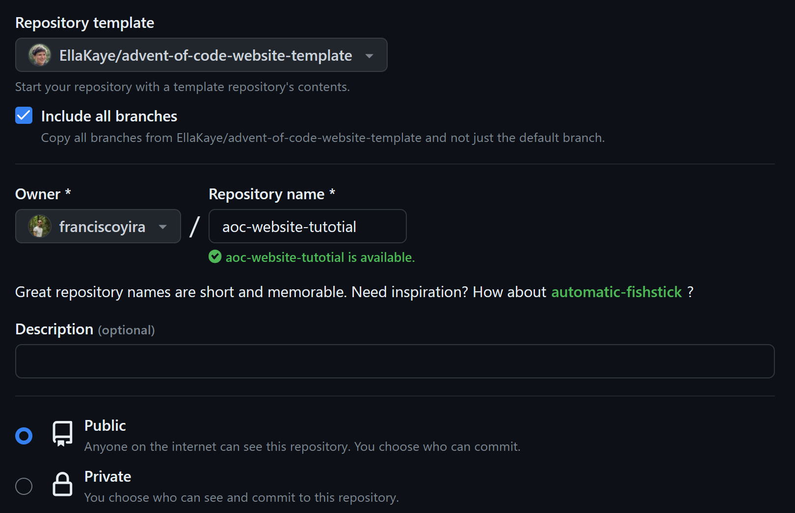

How to get your own Advent of Code website
Of course, I didn’t code the website itself on my own. Instead, I used this amazing Quarto template created by Ella Kaye.
This template is not only a great way to share and showcase your solutions, but also provides a tidy environment for working on the problems before publishing your progress (in fact, you can use the template just as a personal scratchpad if you want, without sharing anything on the Internet).
That’s because of its tight integration with the aochelpers package, which facilitates retrieving and parsing the puzzles’ input and spares you the hassle of writing the boilerplate code chunks that precede working on the solutions themselves.
Without further ado, here’s how you can get one for yourself.
First, log in to GitHub and go the the template repo. There you clic on the “Use this template” button located in the top-left corner, and then choose “Create a new repository”.

On the new page that appears, select the ‘Include all branches’ option (as this facilitates publishing the website to GitHub Pages) and write a repository name and description of your choice. Make it public.

You’ll get your own repo with a copy of all the contents from the original template1. Next, you can (and should) clone this repo to your favourite IDE. I’ll proceed with the assumption that you’re using Visual Studio Code, one of the most popular IDEs, which also has excellent Quarto support. However, most of the following steps should also easily apply to RStudio.

And here we are, with the repo cloned to our local environment. The project has many folders and files and it can be somewhat overwhelming to know where to start in order to get the website up and running (it was for me at least üòÖ).
Assuming you’re beginning with 2023, here is a simplified workflow to start sharing your solutions:
- Edit the
index.qmdfile, which corresponds to the content of the homepage of your website (except the navigation bar). - Edit the
website:section in the_quarto.ymlfile. This controls the title and navigation bar of the website. For example, here you can remove2022.qmdfrom the navigation bar if you’re not going to post solutions from previous years yet. You can also add more external links and icons (for example, here is the navbar I’m using).
From here, you can just start adding .qmd files manually with the following structure: 2023/day/[NUMBER OF THE DAY]/index.qmd and also manually download the text input of each puzzle to the corresponding folder (e.g. 2023/day/[NUMBER OF THE DAY]/index.qmd).
This .qmd files need to have a YAML header like this:
---
title: "2023: Day 1"
date: 2023-12-1
categories:
- MY_CATEGORY
draft: false
---And the rest is just a regular .qmd file, where you can also use Python or other languages. Then you commit and push your changes. Pushing should automatically trigger a GitHub Action that publishes the site onto GitHub pages in a URL like this: https://[yourusername].github.io/[your repo]/. Voilà! You already have your own Advent of Code mini website!
Now, bear with me if you’re interested in using the aochelpers R package to automate the process of retrieving the inputs and creating the .qmd files. It requires a bit of initial set up, but it pays off if you’re planning to work through many of the puzzles. Here is how to do it:
- Install the
aochelpersR package. This package is not in CRAN yet, so you have to install it from GitHub:
# install.packages("remotes")
remotes::install_github("EllaKaye/aochelpers")- For the automated retrieval of inputs to work, you need to save the session token of your Advent of Code account as an R environment variable. I would say this is the most difficult part of the process. Here is how to get the cookie or session token using a Chromium web browser (Chrome, Edge, Brave, etc):
- Visit adventofcode.com
- Log in
- Right click anywhere and then click on Inspect to view Developer Tools
- Select the Network tab
- Refresh the page
- Select the “adventofcode.com” request under Request Headers
- There should be a cookie including
session=<cookie here>. Copy the cookie without thesession=part
- Once you have the cookie, go back to R and execute
usethis::edit_r_environ()to open your.Renvironfile, which is where you can set your environment variables. Here, add a new line like this:ADVENT_SESSION = <cookie>, replacing<cookie>with the token you got in the previous step. - Restart R (in VS Code you can do this by just killing the terminal and openning a new one).
And that’s all! Now you can execute this command aochelpers::aoc_new_day([NUMBER OF THE DAY]) which will automatically create the corresponding folder and .qmd file for that date, with all the boilerplate Markdown and YAML already written for you, and also download the input for that day in the same folder.
You can also call the function with a second argument named year to work on puzzles for previous years (if you omit it, it defaults to the current year).
Then you work on your solution inside the corresponding index.qmd file, and when you’re done, you just go to the terminal (not R), execute the command quarto render, and commit and push your changes.